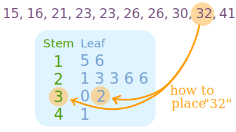

Stem and Leaf Plots
A Stem and Leaf Plot is a special table where each data value is split into a "stem" (the first digit or digits) and a "leaf" (usually the last digit). Like in this example:
Example:
"32" is split into "3" (stem) and "2" (leaf).

More Examples:
- Stem "1" Leaf "5" means 15
- Stem "1" Leaf "6" means 16
- Stem "2" Leaf "1" means 21
- etc
The "stem" values are listed down, and the "leaf" values go right (or left) from the stem values.
The "stem" is used to group the scores and each "leaf" shows the individual scores within each group.
Example: Long Jump
Sam got his friends to do a long jump and got these results:
2.3, 2.5, 2.5, 2.7, 2.8 3.2, 3.6, 3.6, 4.5, 5.0
And here is the stem-and-leaf plot:
| Stem | Leaf |
| 2 | 3 5 5 7 8 |
| 3 | 2 6 6 |
| 4 | 5 |
| 5 | 0 |
Stem "2" Leaf "3" means 2.3
Note:
- Say what the stem and leaf mean (Stem "2" Leaf "3" means 2.3)
- In this case each leaf is a decimal
- It is OK to repeat a leaf value
- 5.0 has a leaf of "0"